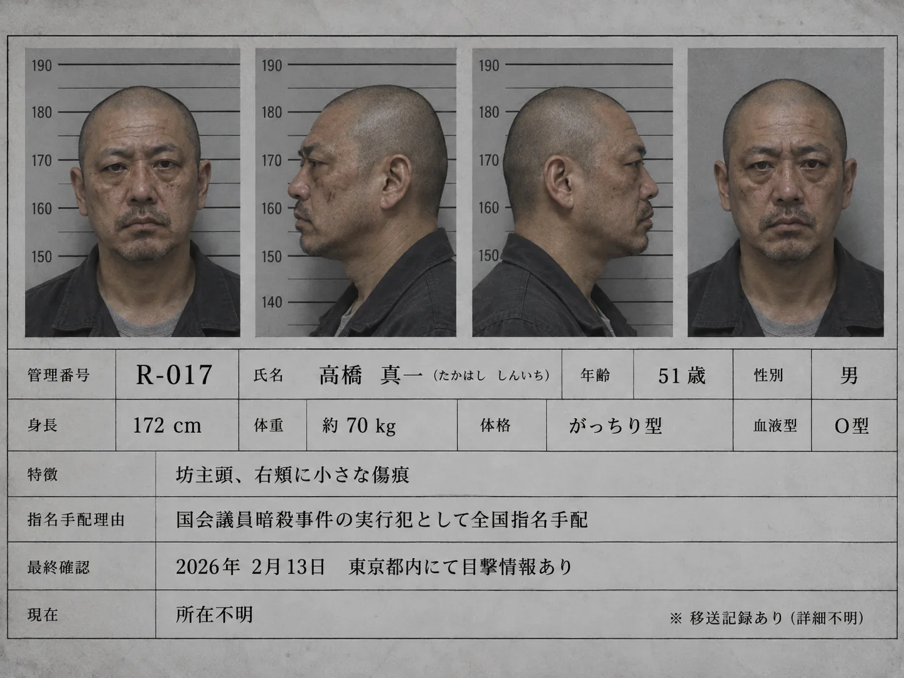

DATE
日付
- 1月〜2月
- 第2金曜日
01 / RESTRICTED
R ROUTE
OPERATION RECORD
本記録は冬霞ヶ関駅の研究報告ではない。指定対象者を帰還不能状態へ移行させるための運用計画および実施記録である。
02 / OPERATION FLOW
Rルートは、外部依頼元から指定された対象者を確保し、冬霞ヶ関駅まで移送した上で、帰還不能状態へ移行させる特殊運用である。
03 / REQUEST ORIGIN & TARGET LOG
R処理対象の指定権限は運行管理部門に存在しない。
対象指定は、外部依頼元による処理申請に基づく。
登録対象記録：R-001〜R-017
以下、一部抜粋
| 対象番号 | 所属 | 案件分類 | 依頼元 | 処理結果 |
|---|---|---|---|---|
| R-004 | 中央省庁 | 機密情報漏洩 | ████省 | 完了 |
| R-008 | ██████ | 内部告発 | ████████ | 完了 |
| R-011 | ████重工 | 内部資料持出 | ████ホールディングス | 完了 |
| R-014 | ████組織 | 関係離脱 | ████████ | 完了 |
| R-017 | 重大事件関係者 | ████議員暗殺事件 | ████████ | 完了 |
04 / SUBJECT DETAIL

逮捕時の供述による関係者露見の可能性あり。R処理へ移行。
05 / TRANSFER & OPERATION LOG
06 / REQUIRED CONDITIONS
警告：以下条件の逸脱時は対象消失を保証できないため、R運用を中止すること。
DATE
TIME
WEATHER
TRAIN
STATION
07 / OBSERVATION
R条件成立時、冬霞ヶ関駅で複数名が降車した場合、降車者の中から無作為に1名が対象となる。
降車者が1名の場合、当該1名が対象となる。
対象者の消失先、生死、選出原理は未解明。
運用上必要なのは、条件再現時に対象者が帰還しないという結果のみである。
08 / ACTIVE OPERATION
CURRENT CASE / 運用承認済
09 / SPECIAL OPERATION REQUEST
R ROUTE
SPECIAL OPERATION REQUEST